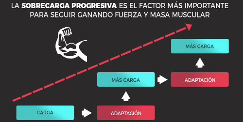
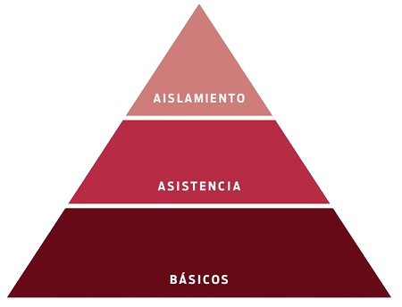
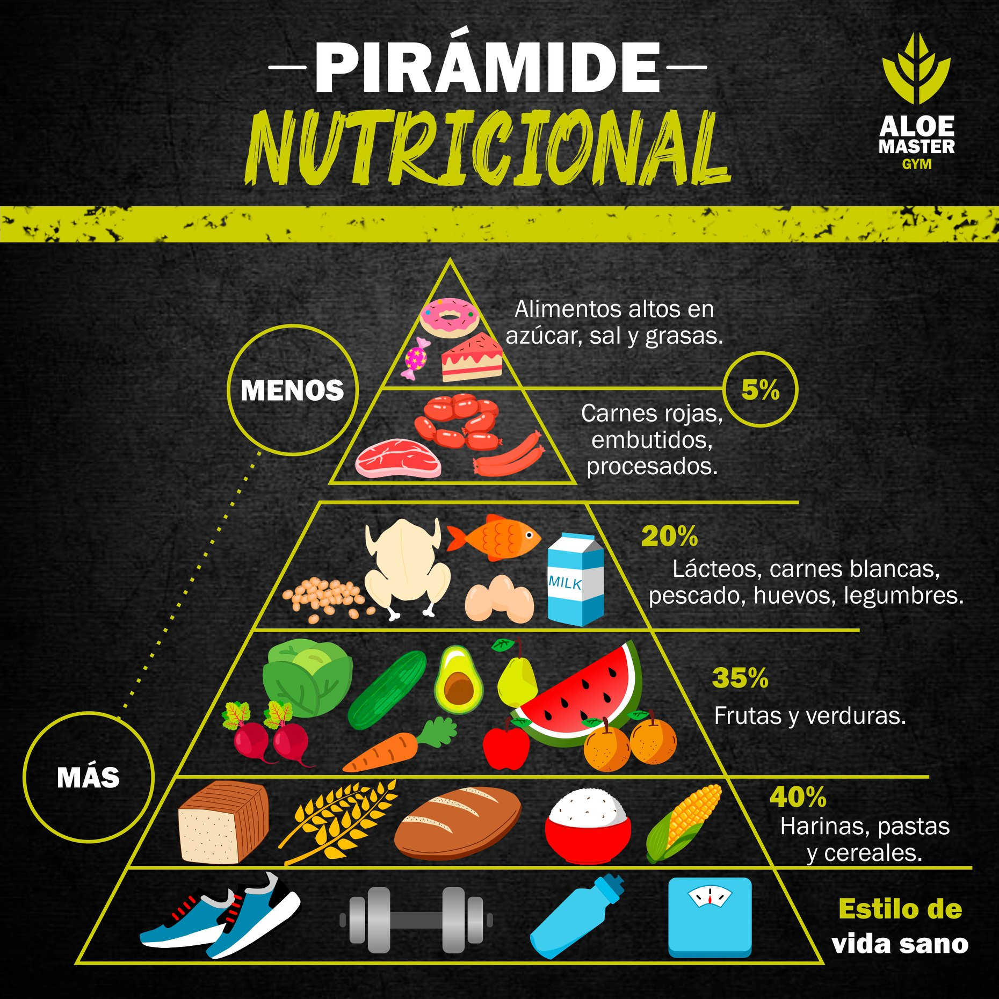

Ganar Masa Muscular
Para ganar musculo hay tres claves:
Para ganar musculo hay tres claves:
Hay dos factores clave involucrados en la ganancia muscular: tensión mecánica y estrés metabólico.
Pero para seguir ganando masa muscular, esta tensión mecánica debe elevarse de manera gradual. Si siempre levantas el mismo peso tus músculos no crecerán. Este es el concepto de sobrecarga progresiva
Podemos lograr esta sobrecarga progresiva de varias maneras:
Cualquier ejercicio que aplique tensión al músculo lo hará crecer, pero unos ejercicios son más efectivos que otros. Personalmente, recomiendo que cualquier programa considere la siguiente pirámide de importancia.
Todo buen programa debe estar basado en ejercicios que repliquen los patrones de movimiento básicos. Hablamos además de ejercicios que involucran una gran cantidad de masa muscular, con una buena respuesta hormonal. En este grupo están ejercicios como sentadilla, peso muerto, press de hombro y press de banca. Ademas:
El volumen se refiere al número total de series y repeticiones en un período concreto, por ejemplo una semana. Si una semana haces por ejemplo diez series de cinco repeticiones de sentadilla, el volumen total habrá sido 50 (10×5).
El volumen total es una variable importante, pero también es relevante (aunque menos) la distribución de ese volumen, y aquí entra en juego el concepto de frecuencia. Como regla general, se recomienda frecuencia dos por grupo muscular, es decir, entrenar cada grupo dos veces por semana.
Esto permitiría generar un estrés suficiente en cada sesión pero sin generar demasiada fatiga, incluyendo después suficiente recuperación antes de la siguiente sesión. Siguiendo el ejemplo anterior, harías 5 series de sentadilla un día y otras 5 series otro día. Además, conviene dejar al menos un día de descanso entre sesiones que ataquen el mismo grupo muscular.
Para crecer, tus músculos necesitan entrenamiento, pero también energía. Al igual que vimos en el caso de la pérdida de grasa, la nutrición deportiva se rige por una pirámide bastante clara.
El superávit calórico es uno de los ingredientes necesarios para aumentar la masa muscular, junto con el entrenamiento adecuado y la recuperación necesaria. Si no comes lo suficiente, el cuerpo no tendrá la materia prima para construir más músculo.
¿Cuántas calorías debes consumir? Lo primero que debes conocer para determinar este número es tu gasto energético total, esto es el número de calorías que quema tu cuerpo por día.
Una vez que conoces este número debes consumir entre 300 y 500 calorías más que las que quemas. ¿Por qué este rango? Porque desafortunadamente no todas las calorías excedentes se convertirán en músculo, también habrá un porcentaje de grasa. Si tu superávit es menor a 300 kcal, tu progreso será demasiado lento. Si excede 500 kcal podrías subir una cantidad considerable de grasa.
La calidad de las calorías es determinante ya que, como mencionábamos arriba, la comida rápida no es la mejor opción. Si bien la proporción de macronutrientes (proteínas, carbohidratos y grasas) ideal para cada persona varía, te recomendamos dividir tus calorías de la siguiente forma: 40% proteínas, 40% carbohidratos y 20% grasas.
Un buen descanso diario es tan importante como el entrenamiento y la dieta, la relación entre estos factores está sumamente vinculada.
Durante los entrenamientos sufrimos microroturas fibrilares como consecuencia del impacto del estrés físico. Dichas “microlesiones” son el primer punto para generar las adaptaciones inducidas por el ejercicio físico programado en busca de un cierto objetivo.
Por tanto, la óptima recuperación de dichas fibras musculares dependerá, en buena medida, de la posterior adecuación al entrenamiento en materia de ganancia de fuerza, crecimiento (hipertrofia) y resistencia muscular.
Un adulto medio necesita entre 7 y 9 horas de sueño cada noche. Dormir regularmente esta cantidad de horas es especialmente importante para aquellos que quieren ganar músculo o aumentar su masa muscular o cambiar su composición corporal. Dormir bien antes y después de cada entrenamiento asegurará los beneficios del esfuerzo.
Si completamos un adecuado descanso nos aseguraremos de que el cuerpo realizará todos los ciclos necesarios para la «puesta a punto», sobre todo en referencia al crecimiento muscular.
En este sentido, nuestro organismo segregará un conjunto de hormonas que enfatizarán el proceso de síntesis de proteínas. Entre este espectro hormonal se encontrarán: